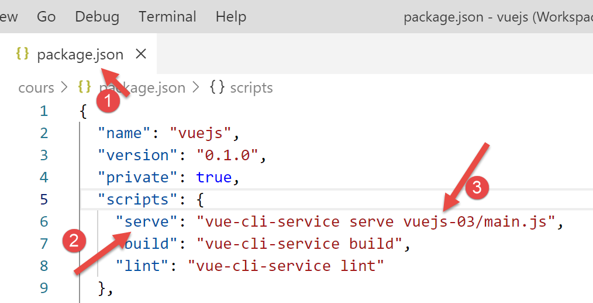

5. مشروع [vuejs-03]: إدارة الأحداث
يقدم مشروع [vuejs-03] مفهومين:
- إدارة حدث [clic] على زر؛
- التوجيه [v-if] الذي يسمح بعرض كتلة HTML بشكل مشروط؛
هيكل المشروع كالتالي:

5.1. البرنامج النصي الرئيسي [main.js]
يظل البرنامج النصي [main.js] دون تغيير:
// الاستيرادات
import Vue from 'vue'
import App from './App.vue'
// المكونات الإضافية
import BootstrapVue from 'bootstrap-vue'
Vue.use(BootstrapVue);
// Bootstrap
import 'bootstrap/dist/css/bootstrap.css'
import 'bootstrap-vue/dist/bootstrap-vue.css'
// التكوين
Vue.config.productionTip = false
// إنشاء مثيل للمشروع [App]
new Vue({
render: h => h(App),
}).$mount('#التطبيق')
5.2. المكون الرئيسي [App.vue]
المكون الرئيسي [App.vue] يستخدم المكون [ClickOnMe] بدلاً من المكون [HelloBootstrap]:
<template>
<b-container>
<b-card>
<!-- جومبوترون بوتستراب -->
<b-jumbotron>
<!-- سطر -->
<b-row>
<!-- عمود بعرض 4 -->
<b-col cols="4">
<img src="./assets/logo.jpg" alt="Cerisier en fleurs" />
</b-col>
<!-- عمود بعرض 8 -->
<b-col cols="8">
<h1>Calculez votre impôt</h1>
</b-col>
</b-row>
</b-jumbotron>
<!-- مكون -->
<ClickOnMe msg="Information..." />
</b-card>
</b-container>
</template>
<script>
import ClickOnMe from "./components/ClickOnMe.vue";
export default {
name: "app",
components: {
ClickOnMe
}
};
</script>
5.3. المكون [ClickOnMe]
يقدم المكون [ClickOnMe] المفاهيم الجديدة التالية:
<template>
<div>
<!-- رسالة على خلفية خضراء -->
<b-alert show variant="success" align="center">
<h4>[vuejs-03] : événement @click, directive v-if, méthodes</h4>
</b-alert>
<!-- رسالة على خلفية صفراء -->
<b-alert show variant="warning" align="center" v-if="show">
<h4>{{msg}}</h4>
</b-alert>
<!-- زر أزرق -->
<b-button variant="primary" @click="changer">{{buttonTitle}}</b-button>
</div>
</template>
<script>
export default {
name: "ClickOnMe",
// معلمات المكون
props: {
msg: String
},
// سمات المكون
data() {
return {
// عنوان الزر
buttonTitle: "Cacher",
// يتحكم في عرض الرسالة
show: true
};
},
// الأساليب
methods: {
// إظهار/إخفاء الرسالة
changer() {
if (this.show) {
// إخفاء الرسالة
this.show = false;
this.buttonTitle = "Montrer";
} else {
// يُظهر الرسالة
this.show = true;
this.buttonTitle = "Cacher";
}
}
}
};
</script>
تعليقات
- الأسطر 4-6: تنبيه أخضر من Bootstrap. لم يتم تحديد عدد الأعمدة المستخدمة. وبالتالي، يتم استخدام الأعمدة الـ 12 الخاصة بـ Bootstrap؛
- الأسطر 8-10: تنبيه أصفر من Bootstrap:
- السطر 8: تتحكم التوجيهية [v-if] التابعة لـ [Vue.js] في ظهور كتلة HTML. يتم التحكم في التنبيه هنا بواسطة قيمة منطقية [show] (السطر 29). إذا كانت القيمة [show==true]، فسيكون التنبيه مرئيًا، وإلا فلن يكون مرئيًا؛
- السطر 9: يعرض التنبيه رسالة [msg] التي تمثل إحدى خصائص المكون (الأسطر 20-22)؛
- السطر 12: زر أزرق اللون يُضغط عليه لإخفاء/إظهار التنبيه [warning]؛
- الأسطر 16-48: كود المكون jS. يضبط هذا الكود التشغيل الديناميكي للمكون:
- الأسطر 20-22: خصائص المكون؛
- الأسطر 24-31: سمات المكون؛
ما الفرق بين [propriétés] و [attributs] لمكون ما، وبين الحقول [props] و [data] للكائن الذي تم تصديره بواسطة المكون في الأسطر 17-47؟
- كما رأينا سابقًا، فإن الخصائص [props] لمكون ما هي معلمات للمكون. ويتم تحديد قيمها من خارج المكون. المكون «A» الذي يستخدم المكون «B» الذي يحتوي على الخصائص [prop1, prop2, ..., propn] سيستخدمه بالطريقة التالية: <B :prop1=’val1’ :prop2=’val2’ ...>؛
- يمثل الكائن الناتج عن الدالة [data] في الأسطر 24-31 حالة المكون أو سماته. ويتم التعامل مع هذه الحالة بواسطة أساليب المكون (الأسطر 33-46). يستخدم <template> في الأسطر 1-14 كلاً من العناصر [propriétés] و [attributs]:
- يتم تحديد قيم الخصائص بواسطة مكون أبوي؛
- يتم تحديد قيم السمات مبدئيًا بواسطة الدالة [data]، ثم يمكن تعديلها بواسطة الطرق؛
- في كلتا الحالتين، يستجيب العرض المرئي فورًا للتغييرات التي تطرأ على خاصية (المكون الأصلي) أو سمة (طريقة المكون). ويُطلق على ذلك اسم «واجهة تفاعلية»؛
في [template] لأحد المكونات، لا يوجد ما يميز خاصية [prop] عن سمة [data]. لمعرفة ما إذا كان يجب وضع بيانات ديناميكية من [template] في السمة [props] أو في الكائن الذي ترجعها الدالة [data]، يكفي ببساطة التساؤل عن من يحدد قيمة هذه البيانات:
- إذا كان الجواب هو المكون الأصلي، فسيتم وضع البيانات في السمة [props]؛
- إذا كان الجواب هو الأسلوب الذي يدير هذا الحدث في المكون، فسيتم وضع البيانات في الكائن الذي ترجعها الدالة [data]؛
يستخدم [template] هنا البيانات الديناميكية التالية:
- [show]، السطر 8. تتم معالجة هذه البيانات داخليًّا بواسطة الأسلوب [changer] الذي يدير الحدث [click] على الزر الموجود في السطر 12. وبالتالي، فهي سمة تم إنشاؤها بواسطة الدالة [data] (السطر 29)؛
- [msg]، السطر 9. هذه رسالة تم تحديدها بواسطة المكون الأصلي. وبالتالي يتم وضعها في السمة [props] (السطر 21)؛
- [buttonTitle]، السطر 12. تتم معالجة هذه البيانات داخليًّا بواسطة الطريقة [changer] التي تدير الحدث [click] على الزر الموجود في السطر 12. وبالتالي، فهي سمة تم إنشاؤها بواسطة الدالة [data] (السطر 27)؛
- أسماء سمات [name, props, data, methods] للكائن الذي يتم تصديره بواسطة المكون محددة مسبقًا. ولا يمكن استخدام أسماء أخرى؛
- السطر 12: تُستخدم السمة [@click] الخاصة بالزر لتحديد الأسلوب الذي يجب أن يستجيب للنقر على الزر. يجب أن يكون هذا الأسلوب موجودًا في الخاصية [methods] للمكون؛
- السطر 33: السمة [methods] للمكون تجمع جميع أساليبه. وغالبًا ما تكون هذه وظائف تستجيب لحدث ما في المكون؛
- الأسطر 35-46: يتم استدعاء الدالة [changer] عندما ينقر المستخدم على الزر:
- إذا كان التنبيه [warning] معروضًا، يتم إخفاؤه ويصبح نص الزر [Montrer] (السطر 39)؛
- إذا كان التنبيه [warning] مخفيًا، يتم عرضه ويصبح نص الزر [Cacher] (السطر 43)؛
- لعرض/إخفاء التنبيه [warning]، يتم تعديل قيمة المتغير المنطقي [show] (السطران 38 و42)؛
- عندما تحتاج إحدى الطرق إلى الإشارة إلى السمة [attr] التي تُرجعها الدالة [data]، نكتب [this.attr] (السطران 38 و42). وهذا يعني أن سمات الكائن الذي تنتجه الدالة [data] هي سمات مباشرة للمكون [this]؛
5.4. تنفيذ المشروع

والنتيجة هي كما يلي: